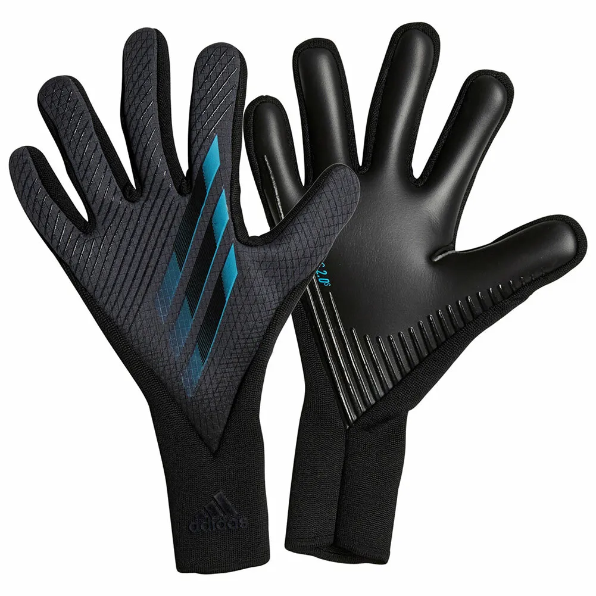
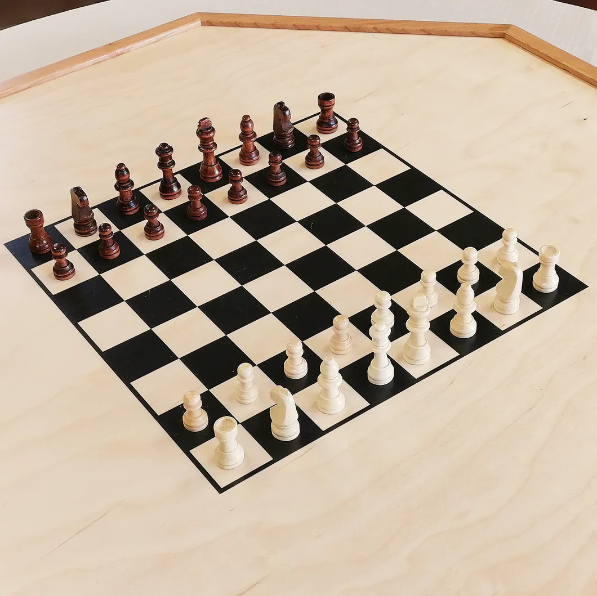

Badminton
I practice badminton very often, it being one of my favourite sports that I have started playing since a young age.

Soccer(Goalkeeping)
I feel the soccer position I am best at would be a Goalkeeper, hence why I practice it every day.

Chess
I play chess at least once a day, either on the phone or a physical chess board. I also started a pretty long time ago, back in maybe 2019
